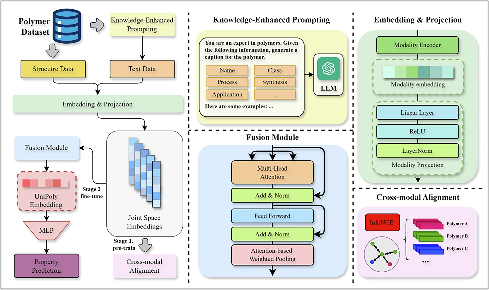

Unified multimodal multidomain polymer representation for property prediction
npj Computational Materials, vol. 11, Art. no. 153, 2025
A multimodal prediction framework fusing SMILES, molecular graphs, descriptors, and 3D conformations with domain knowledge text, achieving state-of-the-art performance on multiple polymer benchmark tasks.
State-of-the-art on multiple polymer benchmarksDOI ↗